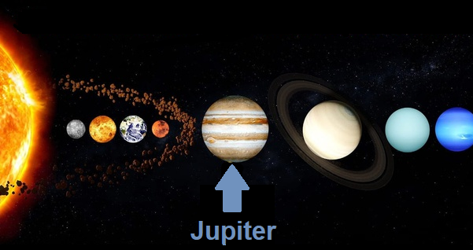

JUPITER
- Jupiter is a gas giant. It is the fifth planet from the sun and the largest in the solar system.
- It is best known for having 79 moons, four of which are called Galilean moons being discovered by Galileo Galilei in 1610 (lo, Ganymede, Europa, Callisto). Jupiter's magnetic field is 14 times stronger than Earth's, and it is the fastest spinning planet in our solar system.
- The ancient Babylonians were the first to record their sightings of Jupiter. Orbital period: 12 years
- Surface area: 61.42 billion sq. km.
- Distance from sun: 778.5 million km.
- Orbital period: 12 years
- Surface temperature: -234 degrees Fahrenheit ( -145 degree Celsius)

